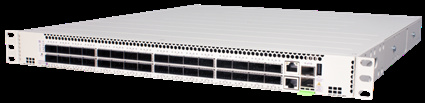

bp-os6900-datasheet
SKILL bp-os6900-datasheet · 来源页码:

R（触发场景）
- 中型园区核心/汇聚、DC ToR 或 spine 选型（10/25/40/100G 固定平台）
- 1RU 高密度需求：128x10G、80x25G、32x100G 端口核算
- 加密核心：认准 X48E/C32E 的全口 MACsec（AES 128/256bit）
- VC 6 台 + ISSU 的不中断升级设计（医院/生产网）
- BGP-EVPN-VXLAN DC fabric、SPB、MPLS l2vpn（付费许可）选型
I（核心理念）
- OS6900 是固定配置核心与 DC 交换机："compact, high-density 10, 25, 40 and 100 GigE platforms... Wire-rate non-blocking up to 6.4 Tb/s"（<<>>/<<>>）。
- 层级：核心/DC 固定档，下接 6860/6870 汇聚，上对 6920（400G）与 9900（模块化）。
A1（与相邻系列选型差异）
- vs OS9900：中型园区/DC ToR 用 6900（1RU 固定，开箱即用）；
大密度 GbE + PoE 核心/按线卡扩容用 9900（288 GbE + 10800W PoE，"investment protection... scaling out"，C3）。
- vs OS6920：6920 是 32x400G 单型号 AI/HPC 骨干（12.8Tb/s、RoCEv2 无损、无 GbE/PoE）；6900 覆盖 1G~100G 全速率与 MACsec 加密。
- vs OS6870：6870 接入/边缘（95W PoE、多千兆用户口）；6900 纯核心（无 PoE、全光口为主 + 10GBaseT 型）。
A2（规格细节速查表）
机型矩阵（<<>> 型号描述 / <<>> 产品矩阵）：
| 型号 | 端口 | 容量/吞吐 | 延迟 | 特点 |
|---|---|---|---|---|
| OS6900X24 | 24 SFP+（1/10G）+ 2 QSFP28 | 920 Gb/s / 684 Mpps | <650ns | 入门 10G |
| OS6900T24 | 24 10GBase-T + 2 SFP + 2 QSFP28 | 920 Gb/s | <650ns | 铜缆 10G |
| OS6900X48 | 48 SFP+ + 6 QSFP28 | 2.16 Tb/s / 1607 Mpps | <650ns | 高密 10G |
| OS6900T48 | 48 10GBase-T + 6 QSFP28 | 2.16 Tb/s | <650ns | 铜缆高密 |
| OS6900X48E | 40 SFP+ + 8 SFP28 + 4 QSFP28 | 2.0 Tb/s / 1488 Mpps | <650ns | 全口 MACsec（AES 128/256bit） |
| OS6900V48 | 48 SFP28（1/10/25G）+ 8 QSFP28 | 4.0 Tb/s / 2976 Mpps | <600ns | 25G 高密（最多 80 口） |
| OS6900C32E | 32 QSFP28（100G 或 4x25/4x10） | 6.4 Tb/s / 4761 Mpps | <600ns | 100G 旗舰 + 全口 MACsec |
上联与堆叠：QSFP28 可拆 4x25G/4x10G；VC 最多 6 台（fabric-mesh 拓扑，<<>>/<<>>）；VC 1+N 冗余管理器 + ISSU（<<>>）。
电源体系（<<>>）：1+1 热插拔 AC/DC、换电不断业务、全系随机双电源；OS6900C-BP/BPD 650W（V48/C32/C32E/X48E）、OS6900X-BP/BPD 400W（X48/T48/X24/T24）；正吹（-F）/反吹（-R）两种风道与风扇槽套件（<<>>）。
Layer 特性（<<>>/<<>>）：完整 L3（OSPF/IS-IS/BGP/VRF）；SPB-M + 硬件 VXLAN VTEP + BGP-EVPN-VXLAN（RFC 7432/8365/9135/9136/9251/9625，<<>>）；MPLS l2vpn（VPLS/VPWS，LDP/BGP）"All the functionalities will be available through paid license"（<<>>）；RoCEv2 支持（<<>>）；G.8032 ERPS。硬件平台：Intel Atom C3558（Xeon D-1518 for V48/C32E）、8~16GB SDRAM、32~64GB flash（<<>>）。
功耗/规格（<<>>）：待机 75~226W、满载 197~532W；0~45°C；MTBF 204k~788k 小时；FIPS 140-2/CC EAL2/NDcPP/JITC/TAA 联邦认证（<<>>）。
规格红线：无 PoE；MACsec 仅 X48E/C32E；MPLS 付费许可。
E（适用场景）
- 中型园区核心/DC ToR：1RU 128x10G（X48 拆分）或 80x25G（V48）（C3）
- 加密核心/DC 上行：X48E/C32E 全口 MACsec（C5）
- 升级不中断：VC + ISSU 写进医院/生产网技术条款（C10）
- DC fabric：BGP-EVPN-VXLAN（主机漫游/多归属/L2-L3 VPN，<<>>）；企业 MPLS 接入/汇聚/端到端 fabric（付费许可，<<>>）
B（限制与坑）
- 仅 X48E/C32E 全口 MACsec——V48/X24/T24/X48/T48 未标注（X9，<<>>），加密需求认 E 后缀
- MPLS 全部功能走付费许可（"through paid license"，<<>>）——报价补许可行项
- 无 PoE/无铜口接入（T 型为 10GBase-T 服务器铜口）——AP 直连接入另配
- 55°C 强制关机（风道温度，<<>>）——热通道设计注意
- V48/C32E 的 MTBF 约 204k/372k 小时，低于入门型（<<>>）——冗余 VC 兜底
- 订购要指定风道方向（-F/-R）与电源制式（AC/DC），机柜冷热通道规划先行（<<>>-<<>>）
来源：bp-omniswitch-datasheets DOC 13（p125-137，DID20220704EN November 2025）；verified.md C3/C5/C10/X9/P20/P21/F2/F4/F5